전자산업기사 (2014-09-20 기출문제)
1과목: 전자회로
1. 다음 회로에서 R1=200[kΩ], R2=20[kΩ]일 때 부궤환율(β)은?
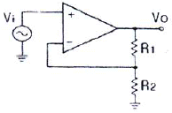
- 약 0.012
- 약 0.023
- 약 0.091
- 약 0.91
(정답률: 76%)

2. 다음 설명 중 옳지 않은 것은?
- 전력 효율은 전원 전력 소비량을 적게 하면서 신호출력을 크게 할 수 있느냐 하는 지수를 말한다.
- A급 전력 증폭기의 컬렉터 손실은 무신호 시에 가장 작다.
- B급 전력 증폭기는 출력이 최대 가능 출력의 약 40%일 때 컬렉터 손실이 가장 크다.
- C급 전력 증폭기는 신호 출력의 첨두치에서 가장 큰 손실이 발생한다.
(정답률: 68%)
3. 전력증폭기에 대한 설명으로 옳은 것은?
- A급의 경우가 전력효율이 가장 좋다.
- C급의 효율은 50% 이하로 AB급보다 낮다.
- B급은 동작점이 포화영역 부근에 존재한다.
- C급은 반송파 증폭용이나 주파수 체배용으로 사용된다.
(정답률: 80%)
4. 다음 원소 중 도너로 사용되지 않는 것은?
- In(인듐)
- P(인)
- As(비소)
- Sb(안티몬)
(정답률: 83%)
5. α0=0.96, fα=10[kHz]인 트랜지스터가 f=20[kHz]에서 동작할 때 전류 증폭도의 크기는 약 얼마인가?
- 0.34
- 0.64
- 0.46
- 0.43
(정답률: 51%)
6. RC 결합 증폭기에서 저주파 특성을 제한하는 주 요소로 가장 적합한 것은?
- 극간용량
- 분포용량
- 전류이득
- 입ㆍ출력 결합용량
(정답률: 80%)
7. 다음 중 시미트 트리거 회로에 대한 설명으로 적합하지 않은 것은?
- 외부 클록 펄스가 필요하다.
- 출력으로 구형파를 얻을 수 있다.
- 입력신호의 잡음 제거 목적으로도 입력단에 사용된다.
- 기본적인 시미트 트리거 회로는 기준전압을 가변할 수 있는 것을 제외하고는 비교기와 동일하다.
(정답률: 65%)
8. 다음 그림의 변조도는 약 몇 [%]인가? (단, A=10[V], B=5[V], C=2.5[V]이다.)
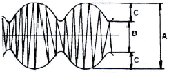
- 10[%]
- 33[%]
- 66[%]
- 80[%]
(정답률: 86%)
9. 다음 정전압 장치의 출력전압은 몇 [V]인가?
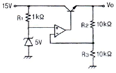
- 5[V]
- 7.5[V]
- 10[V]
- 12.5[V]
(정답률: 67%)
10. 상온의 진성반도체에 전압을 인가했을 때 나타나는 현상으로 가장 적합한 것은?
- 전자와 정공은 모두 양(+) 전극으로 이동한다.
- 전자와 정공은 모두 음(-) 전극으로 이동한다.
- 전자는 양(+)전극으로 이동하고, 정공은 음(-)전극으로 이동한다.
- 전공은 양(+)전극으로 이동하고, 전자는 음(-)전극으로 이동한다.
(정답률: 89%)
11. 연산증폭기에 계단파 입력전압이 인가되었을 때 시간에 따라 출력전압의 변화율은?
- 전류 드리프트
- 슬루 레이트
- 동상신호제거비
- 출력 오프셋 전압
(정답률: 89%)
12. NPN 트랜지스터가 활성 영역에서 증폭기로 정상 동작을 위한 바이어스 인가 방법은? (단, B, E, C는 각각 베이스, 이미터, 컬렉터이다.)
- B에 대하여 E는 -, C는 +
- B에 대하여 E는 +, C는 -
- E에 대하여 B는 -, C는 +
- E에 대하여 B는 +, C는 -
(정답률: 64%)
13. 어떤 증폭기의 중간영역 전압이득이 500이고 입력 RC 회로의 하한 임계 주파수가 500[kHz]이다. 주파수 500[kHz]에서 전압 이득은 약 얼마인가?
- 250
- 70.7
- 350
- 707
(정답률: 51%)
14. 다음 연산증폭기 회로의 전체 이득(VO/VS)은 몇 [dB]인가?
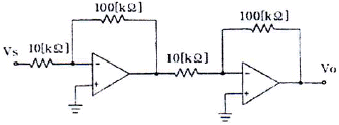
- 10[㏈]
- 20[㏈]
- 30[㏈]
- 40[㏈]
(정답률: 68%)
15. 그림과 같이 이미터 저항을 갖는 증폭회로에서 이미터 저항 RE의 가장 중요한 역할은?
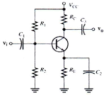
- 출력을 증가시킨다.
- 노이즈를 증가시킨다.
- 주파수 대역폭을 감소시킨다.
- 안정도를 개선시킨다.
(정답률: 87%)
16. 효율은 좋으나 출력파형이 심하게 일그러지므로 고주파 동조 증폭기에 한정적으로 응용되는 전력 증폭기는?
- A급 전력증폭기
- B급 전력증폭기
- C급 전력증폭기
- AB급 전력증폭기
(정답률: 78%)
17. 무부하 출력전압이 24[V]인 전원장치에 부하 연결 시 출력전압이 22[V]이면 전압 변동률은 약 몇 [%]인가?
- 5[%]
- 7[%]
- 9[%]
- 10[%]
(정답률: 75%)
18. 하틀레이(Hartley) 발진기에서 궤환 요소는?
- 코일
- 용량
- 저항
- 용량+코일
(정답률: 78%)
19. 다음 그림과 같은 OPAMP 회로에서 출력 전압 VO는? (단, V1=+1V, V2=+2V, V3=+3V, R1=500[kΩ], R2=1[MΩ], R3=1[MΩ], Rf=1[MΩ]이다.)
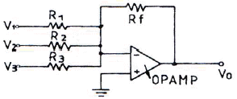
- +3V
- +7V
- -3V
- -7V
(정답률: 83%)
20. 변압기의 2차 코일에 중간탭을 사용하는 전류회로는?
- 반파정류회로
- 전파정류회로
- 브리지정류회로
- 배전압정류회로
(정답률: 70%)
2과목: 전기자기학 및 회로이론
21. 환상솔레노이드의 단위 길이 당 권수를 n[회/m], 전류를 I[A], 반지름을 a[m]라 할 때 솔레노이드 외부의 자계의 세기는? (단, 주위의 매질은 공기이다.)
- 0
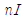
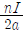
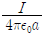
(정답률: 66%)
22. "유도 기전력은 ( )의 변화를 방해하는 방향으로 생기며, 그 크기는 ( )의 시간적인 변화율과 같다."에서 ( ) 안에 들어갈 내용으로 알맞은 것은?
- 전압
- 전류
- 전자파
- 쇄교자속
(정답률: 73%)
23. 두 종류의 금속을 접속하여 폐회로를 만들고 두 접합 부분을 다른 온도로 유지하여 열기전력을 일으켜 열전류가 흐르는 효과는?
- 홀효과
- 펠티에효과
- 제벡효과
- 톰슨효과
(정답률: 76%)
24. 균일한 자계 H (AT/m) 내에 자극의 세기가 ±m[Wb], 길이가 ℓ[m]인 막대자석을 그 중심 주위에 회전할 수 있도록 놓는다. 이때에 막대자석과 자계의 방향사이의 각을 θ라고 하면 자석이 받는 회전력은 몇 [Nㆍm/rad]인가?
- mHℓcosθ
- mHℓsinθ
- 2mHℓcosθ
- 2mHℓsinθ
(정답률: 55%)
25. 1A=1[C/sec]로 정의할 수 있다. 그런데 전류의 절대측정은 거리 1[m] 떨어진 평행도선 길이 1[m]마다의 전자력이 몇 [N]이 작용할 때 1[A]라 할 수 있는가?
- 2×10-7
- 3×10-7
- 4×10-7
- 5×10-7
(정답률: 58%)
26. 그림과 같은 두 동심 구도체 사이의 정전용량은 몇 [F]인가?
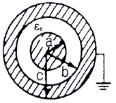
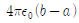
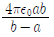
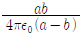
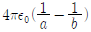
(정답률: 72%)
27. 동심구형 콘덴서의 내구와 외구의 내반경을 각각 1/3 로 하고 내외 도체간에 유전체(
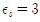
)를 채우면 정전용량은 처음보다 어떻게 되는가?- 동일하다.
- 1/2 로 줄어든다.
- 1/3 로 줄어든다.
- 1/4 로 줄어든다.
(정답률: 66%)
28. 주어진 순간의 전계가
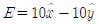
이고 자계가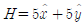
인 경우 이 전자계에 의해 전파되는 전력의 방향과 크기[W2/m]는?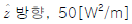
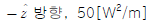
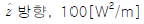
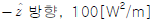
(정답률: 51%)
29. 진공 중에서 멀리 떨어져 있는 반지름이 각각 a1[m], a2[m]인 두 도체구를 V1[V], V2[V]인 전위를 갖도록 대전시킨 후 가는 도선으로 연결할 때 연결 후의 전위는?
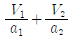
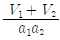
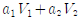
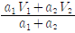
(정답률: 67%)
30. 정전용량이 일정한 정전콘덴서에 축적되는 에너지와 전위의 관계는 어떤 형태로 나타나는가?
- 원
- 타원
- 쌍곡선
- 포물선
(정답률: 73%)
31. 두 개의 코일 L1, L2를 같은 방향으로 직렬로 접속하였을 때, 합성 인덕턴스가 68[mH]이고, 극성을 반대로 접속하였을 때, 합성 인덕턴스가 12[mH]이었다. L1=20[mH]일 때, L2 값은?
- 1[mH]
- 10[mH]
- 12[mH]
- 20[mH]
(정답률: 63%)
32. 정현 대칭(기함수)에서는 어느 함수식이 성립하는가?
- f(t) = f(t)
- f(t) = -f(t)
- f(t) = f(-t)
- f(t) = -f(-t)
(정답률: 68%)
33. 저항, 인덕터, 커패시터를 각각 1개씩 이용하여 직렬회로를 구성하고, 일정한 주파수를 갖는 교류전압을 인가했을 때, 임피던스 특성이 저항특성으로 나타났다. 이 회로에 대하여 보다 변동이 심한 교류전압을 인가한다면 회로의 특성은?
- 직렬공진회로 특성을 갖는다.
- 유도성회로의 특성을 갖는다.
- 병렬공진회로 특성을 갖는다.
- 용량성회로의 특성을 갖는다.
(정답률: 66%)
34. 수정해야함 의 직렬회로에 R=20[ ], L=0.1[H] 60[Hz], Ω의 220[V] 교류전압이 인가되었을 대 회로에 공급되는 평균전력은?
- 152[W]
- 273[W]
- 387[W]
- 531[W]
(정답률: 46%)
35. 그림과 같은 어떤 정K형 필터가 있다고 할 때 이 필터는?
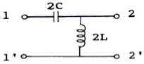
- 저역필터
- 중역필터
- 고역필터
- 대역필터
(정답률: 74%)
36. 하이브리드 h 파라미터에서 단락 임피던스와 개방 출력 어드미턴스를 갖는 상수들로 구성된 것은?
- 단락 임피던스 : h11, 개방 출력 어드미턴스 : h12
- 단락 임피던스 : h11, 개방 출력 어드미턴스 : h22
- 단락 임피던스 : h21, 개방 출력 어드미턴스 : h22
- 단락 임피던스 : h21, 개방 출력 어드미턴스 : h12
(정답률: 70%)
37. 커패시터에 정현파 전압을 인가하였을 때, 용량성 전류(Io)와 용량성 리액턴스(Xo)와의 위상각 차이는?
- 0°
- 45°
- 90°
- 180°
(정답률: 58%)
38. 교류전압 100[V], 전류 20[A]로서 1.6[kW]의 전력을 소비하는 회로의 리액턴스는 몇 [Ω]인가?
- 3[Ω]
- 4[Ω]
- 5[Ω]
- 10[Ω]
(정답률: 31%)
39. 분포 정수 회로에서 위상 정수가 β라 할 때 파장(λ)은?
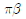
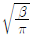
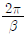
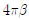
(정답률: 67%)
40. ABCD 파라미터(parameter)에서 C는?(오류 신고가 접수된 문제입니다. 반드시 정답과 해설을 확인하시기 바랍니다.)
- 개방 역방향 전달 어드미턴스
- 단락 역방향 전달 어드미턴스
- 개방 순방향 전달 어드미턴스
- 단락 순방향 전달 어드미턴스
(정답률: 58%)
3과목: 전자계산기일반
41. 11001110과 10101000을 AND 연산하면?
- 11001110
- 10101011
- 11101111
- 10001000
(정답률: 80%)
42. 컴퓨터의 직렬 입ㆍ출력 인터페이스가 아닌 것은?
- USART
- ACIA
- SIO
- PPI
(정답률: 75%)
43. 다음 그림과 같이 A, B 레지스터에서 2개의 자료에 대해 ALU에 의한 OR 연산이 이루어졌을 때 그 결과가 출력되는 C 레지스터의 내용은?
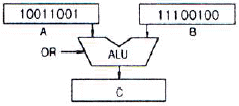
- 11111100
- 11101101
- 11111101
- 01100111
(정답률: 78%)
44. 에러를 검출하여 정정까지 가능한 코드는?
- Hamming code
- EBCDIC code
- ASCII code
- BCD code
(정답률: 88%)
45. C 언어의 특징이 아닌 것은?
- 하드웨어에 직접 접근할 수 있다.
- 펌웨어(Firmware) 개발에 주로 사용된다.
- 대표적인 인터프리터 언어이다.
- 순차적인 특성을 가진다.
(정답률: 68%)
46. 데이터 전송에 대한 설명으로 옳지 않은 것은?
- 원거리 데이터 전송은 모두 병렬전송이다.
- 컴퓨터 내부의 데이터 전송은 직렬과 병렬 전송으로 이루어진다.
- 변복조 장치는 중ㆍ고속의 원거리 통신에 적합하다.
- 컴퓨터 내부의 데이터 전송은 데이터 버스를 통하여 이루어지므로 각기 다른 형태로 이루어진다.
(정답률: 75%)
47. CPU를 구성하는 주요 요소에 해당되지 않는 것은?
- 연산장치
- 레지스터
- 제어장치
- 주기억장치
(정답률: 69%)
48. 중앙처리장치를 하나의 칩으로 집적해서 만들고 메모리와 입출력 장치를 접속시킨 것은?
- 전원회로
- 마이크로컴퓨터
- 터미널
- 데이터 시스템
(정답률: 78%)
49. 순서도를 작성하는 이유로 가장 타당한 것은?
- 시스템의 성능을 분석하기 위하여 한다.
- C언어의 코딩을 생략하기 위하여 한다.
- 프로그램을 작성할 경우 처리되는 자료의 흐름이 잘 이해되도록 하기 위하여 한다.
- 시스템 설계를 하기 위하여 한다.
(정답률: 84%)
50. 마이크로프로그램을 이용하는 제어 장치의 구성 요소가 아닌 것은?
- 제어 버퍼 레지스터(Control Buffer Register)
- 제어 주소 레지스터(Control Address Register)
- 명령어 해독기(Instruction Decoder)
- 명령어 인출기(Instruction Fetcher)
(정답률: 60%)
51. 입력 장치가 아닌 것은?
- 키보드
- X-Y 플로터
- 마우스
- OMR
(정답률: 83%)
52. CPU가 정지 상태임을 나타내는 신호는?
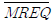
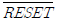
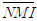
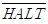
(정답률: 75%)
53. 컴퓨터의 기억장치에서 표현되는 정보의 단위가 아닌 것은?
- bit
- byte
- address
- word
(정답률: 84%)
54. PCB와 IC를 테스트하기 위한 목적으로 1985년 조직된 것은?
- ITU
- IEEE
- JTAG
- W3C
(정답률: 69%)
55. 한 명령의 execute cycle 중에 인터럽트 요청이 있어 인터럽트를 처리한 후 다음에 수행하는 cycle은?
- fetch cycle
- indirect cycle
- direct cycle
- execute cycle
(정답률: 75%)
56. 4096×8 EPROM인 메모리에서 어드레스와 데이터는 각각 몇 비트씩인가?
- 어드레스 : 8비트, 데이터 : 8비트
- 어드레스 : 8비트, 데이터 : 12비트
- 어드레스 : 12비트, 데이터 : 8비트
- 어드레스 : 12비트, 데이터 : 12비트
(정답률: 77%)
57. 메이지 스테이트(Major State)의 인출(Fetch) 사이클에서 사용하지 않는 것은?
- Program Counter
- Stack Pointer
- Memory Buffer Register
- Memory Address Register
(정답률: 57%)
58. 프로그램의 잘못을 고쳐 나가는 작업을 무엇이라 하는가?
- 코딩(CODING)
- 디버깅(DEBUGGING)
- 펀칭(PUNCHING)
- 레코딩(RECORDING)
(정답률: 89%)
59. 중앙처리장치(CPU)를 통하지 않고 직접 주기억 장치를 액세스하여 데이터가 전송되는 방식은?
- DMA
- Handshaking I/O
- Cache Memory
- Programmed I/O
(정답률: 83%)
60. 연산자(operation)의 기능에 속하지 않는 것은?
- 주소지정 기능
- 전달 기능
- 제어 기능
- 입출력 기능
(정답률: 51%)
4과목: 전자계측
61. 다음 중 고주파용 주파수계가 아닌 것은?
- 흡수형 주파수계
- 헤테로다인 주파수계
- Lecher 선 주파수계
- 진동편형 주파수계
(정답률: 70%)
62. 가동코일형 계기에서 영구자석 간에 연철심을 사용하는 이유는?
- 평등 자계로 하기 위하여
- 제어 작용을 시키기 위하여
- 불평등 자계로 하기 위하여
- 제동 작용을 시키기 위하여
(정답률: 73%)
63. 증폭기의 비선형 동작에 의해 나타나는 일그러짐율을 측정하는 계측기는?
- 스펙트럼 분석기
- 고주파 왜율계
- 저주파 왜율계
- 고조파 왜율계
(정답률: 60%)
64. 디지털 계측에서 A-D 변환기의 분류방식이 아닌 것은?
- 전압-주파수 변환방식
- 전압-시간 변환방식
- 전압-전류 변환방식
- 수치 비교형
(정답률: 64%)
65. 다음 중 스위프 신호 발진기에 들어가지 않는 것은?
- 저주파 발진기
- 톱니파 발진기
- 진폭 제한기
- 리액턴스관
(정답률: 50%)
66. 참값이 200[mA]이고, 측정값이 204[mA]일 때 오차율은?
- 1[%]
- 2[%]
- 3[%]
- 4[%]
(정답률: 76%)
67. 직류 고전압 측정시 사용될 수 있는 측정확대 장치는?
- 저항 분류기
- 인덕턴스 분압기
- 저항 분압기
- 인덕턴스 변류기
(정답률: 71%)
68. 직류고감도 전압계의 입력회로에는 어떠한 회로가 사용되는가?
- 저저항 분압회로
- 고저항 분압회로
- 저입력 직류증폭회로
- 고입력 직류증폭회로
(정답률: 64%)
69. 계수형 주파수계로 측정할 수 없는 것은?
- 주기
- 고주파 진폭
- 분주비
- 시간간격 측정
(정답률: 69%)
70. 그림과 같은 등가회로로 표시할 수 있는 콘덴서의 유전체 역률 tanδ를 나타내는 식 중 옳은 것은?
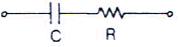
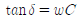
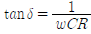
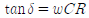
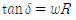
(정답률: 73%)
71. 고주파 전류계용으로 일반적으로 많이 사용되는 것은?
- 가동철편형
- 전류력계형
- 가동코일형
- 열전대형
(정답률: 49%)
72. 다음 중 일반적인 측정 상의 주의할 점으로 옳지 않은 것은?
- 표유 임피던스를 크게 할 것
- 차폐 및 접지를 철저히 할 것
- 주파수대에 적합한 회로 소자를 쓸 것
- 기기 회로의 임피던스 정합을 시킬 것
(정답률: 82%)
73. 오실로스코프로 진폭 변조편을 측정하여 다음과 같은 파형을 얻었다. 최대치(A)=40[mm]로 하고 변조도(M)=80[%]로 하기 위한 최소치 B의 크기는 약 얼마인가?
- 4.4[mm]
- 3.3[mm]
- 2.3[mm]
- 1.5[mm]
(정답률: 60%)
74. 직류에서부터 단파대 이하까지의 낮은 주파수에서 사용되는 감쇠기는?
- 리액턴스 감쇠기
- 용량 감쇠기
- M형 감쇠기
- 저항 감쇠기
(정답률: 60%)
75. 오실로스코프의 CRT 구조에서 초점 조정기는?
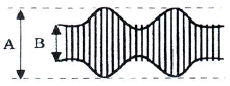
- 제어 그리드
- 집속 양극
- 수차 조정기
- 수평 위치 조정기
(정답률: 54%)
76. 상호 인덕턴스 계측에 주로 사용하는 bridge는?
- Wien bridge
- kohlrausch bridge
- Schering bridge
- Campbell bridge
(정답률: 67%)
77. 피측정 주파수를 계수형 주파수계로 측정한 결과 1초에 반복한 횟수가 60번 이었다. 피측정 주파수는?
- 1 [Hz]
- 60 [Hz]
- 1/60 [Hz]
- 360 [Hz]
(정답률: 87%)
78. 전자 시간 간격 계수기로 선형 경사 전압이 입력전압 기준에서 0[V]까지 하강하는데 걸리는 시간을 측정하여 그 시간에 비례하는 펄스 개수를 전자 지시기 상에서 숫자로 나타내는 디지털 전압계(DVM)는?
- 램프형(ramp-type)
- 적분형(integrating-type)
- 연속 평형형(continuous balance-type)
- 계속 추정형(successive approximation-type)
(정답률: 55%)
79. X-Y 기록계를 사용할 수 없는 것은?
- 제어계의 동작 분석
- 자성 재료의 자화 곡선
- 디지털 전자계산기의 출력 기록
- 반도체의 특성 곡선으로부터 리사쥬 도형에 의한 해석
(정답률: 58%)
80. 최대 눈금 300[V]인 0.2급 전압계로 전압을 측정하였더니 지시가 100[V]이었다. 상대오차는?
- 0.4[%]
- 0.5[%]
- 0.6[%]
- 0.7[%]
(정답률: 71%)